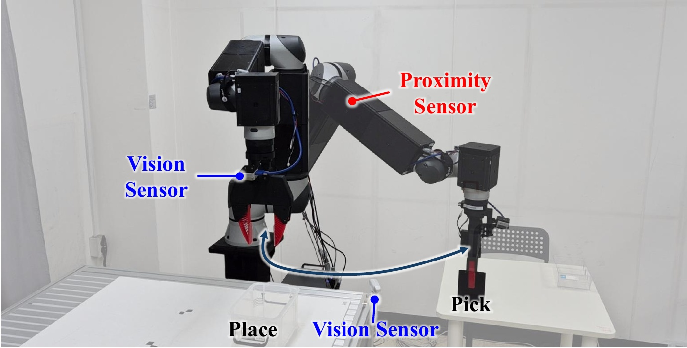
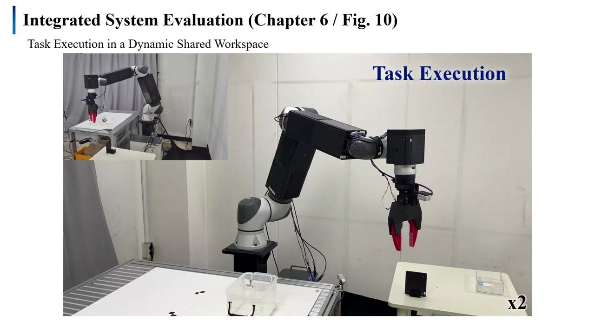
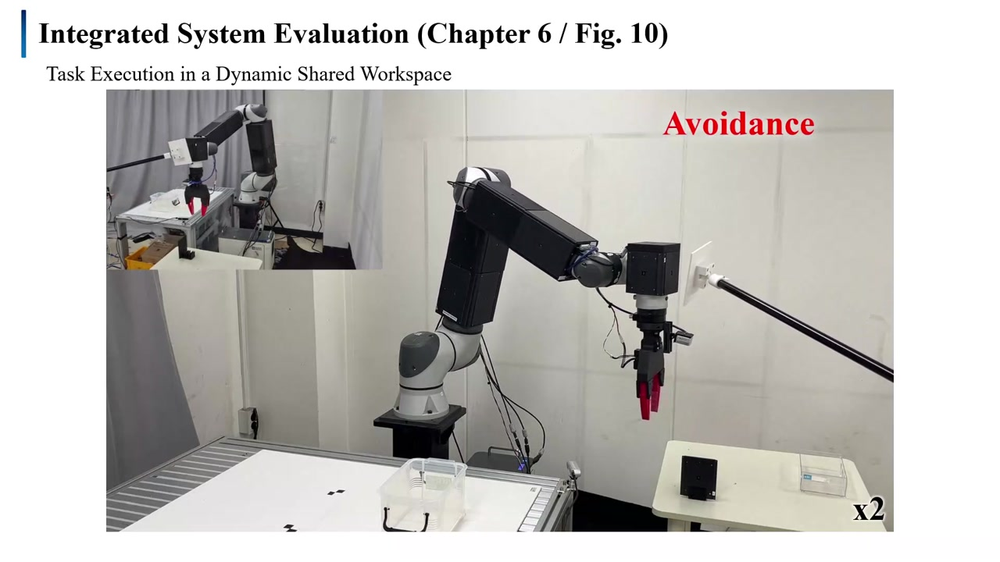
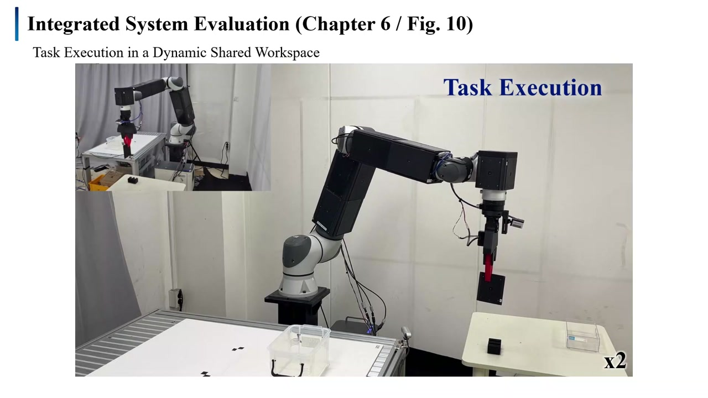

ROBOT LEARNING · SYSTEM INTEGRATION
Interactive
Diffusion Policy
학습 기반 작업 · 근접 회피 · 회피 후 작업 재개
기존 근접 회피 제어를 Diffusion Policy의 물체 이송 작업에 연결했습니다. 공동연구 시스템을 RB10에서 실행하고, 장애물 회피 이후에도 작업을 이어가는지 검증했습니다.
RB10 통합 실험 · 작업 수행 → 장애물 회피 → 작업 재개
27초 · 원본 ×2RESEARCH BACKGROUND
근접 회피 제어를
학습 기반 작업으로 확장
이전 연구에서는 주어진 목표를 추종하면서 근접 장애물을 피하는 제어를 구현했습니다. 이번에는 Diffusion Policy가 생성하는 목표를 연결해, 물체를 집고 옮기는 작업 중에도 회피가 작동하도록 확장했습니다.

SYSTEM & CONTRIBUTION
정책·회피 제어·로봇을
하나의 실행 구조로 연결
Diffusion Policy가 말단 목표를 생성하고, RMPflow가 목표 추종과 근접센서 기반 회피를 함께 반영합니다. 회피로 학습 시연에서 벗어난 상태(OOD)에 놓이면, LPB가 정책의 행동 생성을 회복 방향으로 유도합니다.
시스템 구성과 담당 범위
겹치는 영역은 공동 수행현재 작업 상태 관측
말단 목표 생성
목표 추종 + 장애물 회피
실로봇 동작 실행
OOD 기반
행동 생성 회복 유도
거리 피드백
팀원 담당 LPB의 구현·학습·연동과 회복 데이터 수집은 팀원이 수행했습니다.
REAL-ROBOT VALIDATION
회피 이후의
작업 재개를 검증
동적으로 목표 진행을 막는 대표 실험에서 DP+RMPflow는 회피 후 작업을 이어가지 못하고 작업 공간과 충돌했습니다. Recovery-aware LPB를 함께 적용한 공동연구 시스템은 물체를 집어 옮기는 작업을 재개했습니다.
회피 후 상태에서의
작업 완료 성공률
동일한 시스템에서 회복 방법을 바꾸어 비교했습니다. 실제 회피 상황을 반영한 데이터로 학습한 Recovery-aware LPB가 가장 높은 성공률을 보였습니다.
평가 조건회피 후 상태를 대표하는 8개 자세
자세별 10회 · 조건별 총 80회
| 회복 방식 | 성공률 |
|---|---|
| No Guidance회복 유도 없음 | 25.0% |
| LPB기존 checkpoint rollout 데이터 | 63.8% |
| Recovery-aware LPB실제 회피·작업 재개 데이터 | 91.3% |
출처: 제출 원고 Table I · 회피 후 상태에서 시작하는 작업 완료 평가
통합 실험의 실행 장면
통합 데모 발췌 · 원본 영상 시각
학습한 작업 수행
정책이 생성한 목표를 따라 물체에 접근

장애물 접근 → 회피
근접센서 입력으로 동작을 조정

회복 후 작업 재개
물체를 집어 들어 이송을 이어감
VIDEO & RESOURCES
공동연구 전체 영상과
제출 자료
근접센서와 회피 제어부터 회복 적용 비교, 통합 실험까지 담은 3분 12초 제출 영상입니다. 주요 비교 구간은 아래 버튼으로 바로 확인할 수 있습니다.
센서·회피 제어 → 회복 적용 비교 → 통합 실험
3분 12초 · 장면별 배속은 영상 내 표기01:50 비교 구간 · 왼쪽: DP + RMPflow · 오른쪽: Recovery-aware LPB 추가
Interactive Diffusion Policy
Safe Reactive Avoidance through Proximity Sensing
in Human-Robot Shared Environments